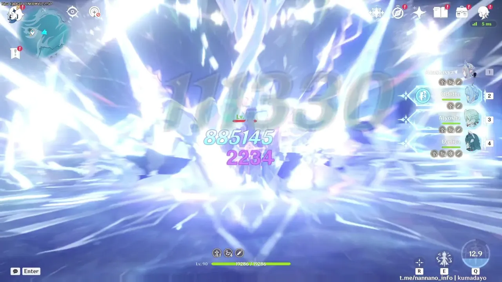
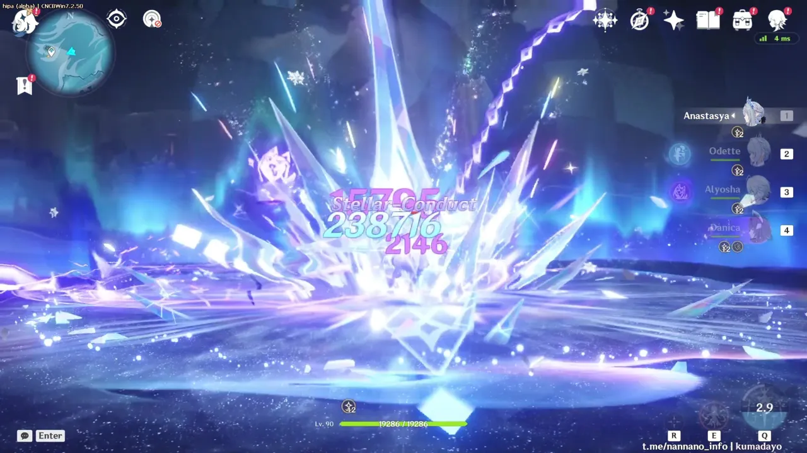
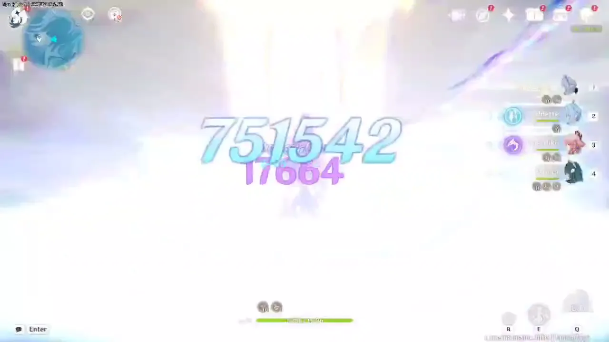
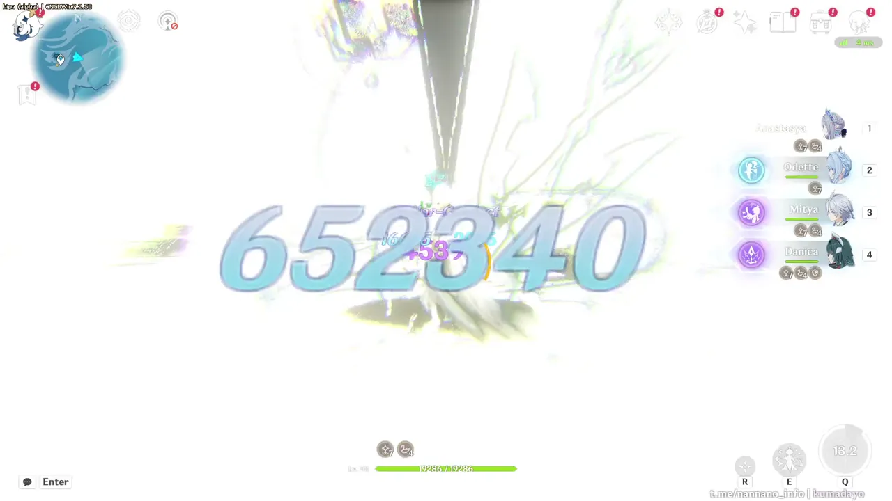
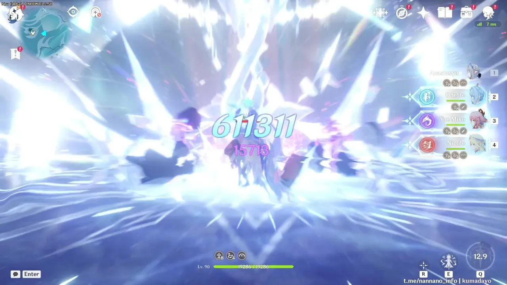
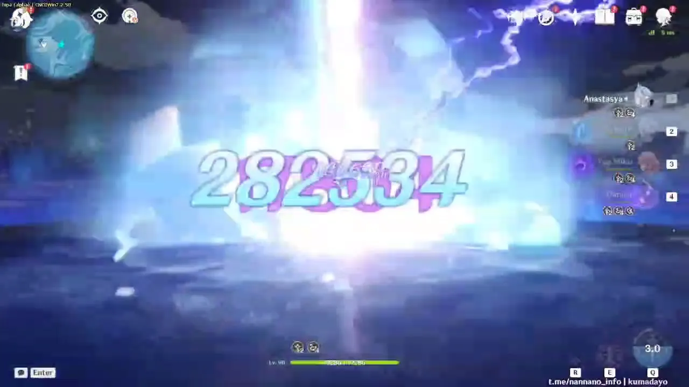
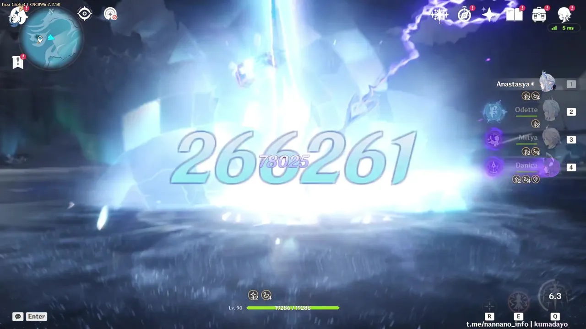
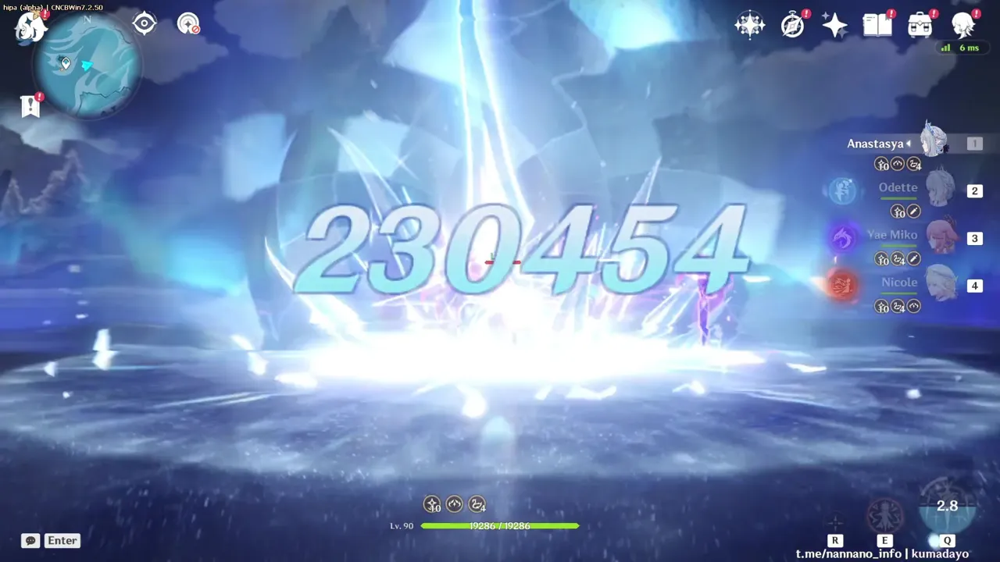
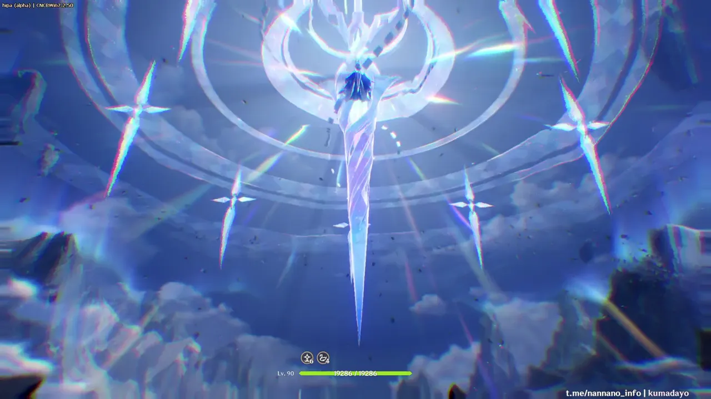

Quanto Alyosha C6, Mitya C0, Yae Miko C1 e Nicole C2 alzano i danni Stellar-Conduct (Cryo su Electro) della Tsaritsa su due colpi: l’Elemental Burst (la lancia che cade) e Palestar Edict: Doom (3ª fase, il colpo con l’arco in aria). Nella sezione 4 c’è anche il danno totale di ogni team.
Cryo · Bow · 5★C04 team · 11 rotazioniDPR · DPS di teamBeta · dati 7.2.50
⚠ Prima di leggere
Le sezioni 1–3 non misurano il danno totale del team. Confrontano solo i danni della Tsaritsa: quelli di Alyosha, Mitya, Yae, Nicole, Odette e Danica non sono contati. Il danno del team è nella sezione 4.
In quelle sezioni sono registrati solo i danni Stellar-Conduct (Cryo su Electro), quelli con i numeri bianco-azzurri. I danni Stellar-Conduct (Electro su Cryo), bianco-violetti, sono esclusi.
È una beta: kit e numeri possono cambiare. Le build usate nei video non sono note.
1. In breve
Media dei danni della Tsaritsa per team
Alyosha C6 + Danica
F2P · Burst più alto
Burst (lancia)883.452
Doom 3 (arco)238.716
+19,7% Burst · −15,5% Doom 3
Yae Miko C1 + Danica
Più costante
Burst (lancia)738.357
Doom 3 (arco)282.534
Doom 3 più alto · riferimento per le percentuali
Mitya C0 + Danica
2°
Burst (lancia)619.457
Doom 3 (arco)263.101
−16% Burst · −7% Doom 3 · valori variabili
Yae Miko C1 + Nicole C2
Nicchia
Burst (lancia)599.990
Doom 3 (arco)228.433
−19% su tutti i colpi
Barre in percentuale sul valore più alto (Burst: Alyosha; Doom 3: Yae). Le percentuali scritte sono rispetto al team Yae + Danica. Medie su 3 rotazioni (2 per Mitya); per il Doom 3 con Alyosha contano solo le 2 rotazioni con colpo critico.
Cosa convince
Già a C0 l’Elemental Burst supera gli 880k con Alyosha C6, che è un 4★. Il team più F2P è anche quello con il Burst più alto.
Con Yae il Burst supera i 700k e la sequenza Palestar Edict: Doom aggiunge circa altri 650k.
Con Yae + Danica i numeri restano quasi identici da una rotazione all’altra.
Il percorso Blessing of Honor è prevedibile: hold E, Burst, una combo di Normal Attack e le tre fasi di Palestar Edict: Doom.
La Tsaritsa dà +12% CRIT DMG a tutto il team, e quando gli altri sono Sealed il bonus si concentra su di lei.
Dubbi
Questi sono solo i danni della Tsaritsa: un Burst più alto non vuol dire un team più forte. Il danno totale dei team è nella sezione 4.
Con Alyosha C6 il Burst è il più alto, ma Doom 2 (balzo) e Doom 3 (arco) sono più bassi che con Yae. Il totale dipende da quanto pesa il Burst nella rotazione.
Danica sembra quasi obbligatoria: con Nicole al suo posto la Tsaritsa perde circa il 19%.
Durante il Sealing non si può fare swap finché la Tsaritsa non chiude la combo, quindi il resto del team resta fermo.
Beta v1 e build sconosciute: valori e interazioni possono cambiare.
Solo Stellar-Conduct (Cryo su Electro) della Tsaritsa
Media per colpo
Burst rotazione per rotazione
Più la linea è piatta, più il team è costante. L’asse parte da 550k per mostrare le differenze.
Passa il mouse (o tocca) su barre e punti per vedere i valori. I numeri completi sono nella tabella sotto.
Tabella completa
Rotazione
Burst (lancia)
Doom 2 (balzo)
Doom 3 (arco)
Alyosha C6 + Danica (F2P)
1
880.067
184.729
75.028 (non critico)
2
885.145
185.845
238.716
3
885.145
185.845
238.716
Media
883.452+19,7%
185.473−16,6%
238.716* −15,5%
Yae Miko C1 + Danica
1
751.542
226.027
282.534
2
731.765
226.027
282.534
3
731.765
214.726
282.534
Media
738.357
222.260
282.534
Mitya C0 + Danica
1
586.574
176.760
259.941
2
652.340
213.009
266.261
Media
619.457−16,1%
194.885−12,3%
263.101−6,9%
Yae Miko C1 + Nicole C2 (nicchia)
1
577.349
179.512
224.390
2
611.311
174.650
230.454
3
611.311
179.512
230.454
Media
599.990−18,7%
177.891−20,0%
228.433−19,1%
Percentuali rispetto alla media del team Yae Miko C1 + Danica. * Media del Doom 3 con Alyosha solo sulle 2 rotazioni con colpo critico: nella prima il colpo non è critico (75.028).

Burst · Alyosha + Danica: 885.145

Doom 3 · Alyosha + Danica: 238.716

Burst · Yae + Danica: 751.542

Burst · Mitya + Danica: 652.340

Burst · Yae + Nicole: 611.311

Doom 3 · Yae + Danica: 282.534

Doom 3 · Mitya + Danica: 266.261

Doom 3 · Yae + Nicole: 230.454
4. DPR e DPS di team
Tutti i danni del team, una rotazione per team
Qui contano i danni di tutto il team, non solo quelli della Tsaritsa. Per ogni team si prende la rotazione con Burst e Doom più alti e si sommano tutti i numeri di danno comparsi a schermo: è il DPR. Il DPS è il DPR diviso per la durata della rotazione.
Passa il mouse (o tocca) sulle barre per vedere durata e differenze.
Team
Rotazione
Durata
DPR
DPS
Alyosha C6 + Danica (F2P)
2
22,10 s
4.725.588 −2,5%
213.828−0,2%
Yae Miko C1 + Danica
1
22,63 s
4.848.828
214.265
Mitya C0 + Danica
2
21,55 s
3.163.763 −34,8%
146.810 −31,5%
Yae Miko C1 + Nicole C2 (nicchia)
3
21,38 s
3.976.983 −18,0%
186.014 −13,2%
Percentuali rispetto al team Yae Miko C1 + Danica. La durata va dallo swap che apre la rotazione all’ultimo numero dopo il Doom 3. I numeri sono letti dai video fotogramma per fotogramma: quelli coperti da altri numeri o dagli effetti sono stimati (dallo 0,6% al 3,5% del DPR, a seconda del team) e qualche colpo piccolo può mancare. Prendi i valori come stime, con un margine di qualche punto percentuale.
Alyosha C6 + Danica e Yae C1 + Danica sono praticamente pari: 213.828 contro 214.265 DPS. La differenza (0,2%) è più piccola dell’errore di lettura. Con Yae il DPR è più alto del 2,5%, ma la rotazione dura circa mezzo secondo in più.
Nicole C2 al posto di Danica costa il 13,2% di DPS. Il DPR scende del 18%, ma la rotazione è un po’ più corta.
Mitya C0 è il team più debole, con il 31,5% di DPS in meno.
Nel team Alyosha c’è un colpo da 881.102 subito dopo lo swap: è la Elemental Skill di Odette, non il Burst della Tsaritsa.
Nel video con Nicole i colpi off-field continuano anche dopo la fine della rotazione 3, fino alla fine del video. Non sono contati.
5. Perché questi numeri
Lettura dal kit (beta, da verificare)
Yae Miko C1
Il Passive Talent “Edict of Cleansing” attiva lo Stellar-Conduct di continuo tramite le Sesshou Sakura, anche off-field, e per questo i danni della Tsaritsa restano alti e costanti.
La C1 dà solo Energy (+8 per Tenko Thunderbolt): aiuta la rotazione ma non buffa la Tsaritsa.
Mitya C0
Numeri più bassi e variabili (Burst 586k, poi 652k). Nella prima rotazione sembra pesare il tempo di carica dei Gradient Beacon.
Il tap E dà fino a +120 Elemental Mastery al team, ma servono circa 6 s di Stellar-Conduct continuo. Il suo Passive Talent (+14% al moltiplicatore) potrebbe non sommarsi a quello della Tsaritsa.
Alyosha C6 (F2P)
Quando si attiva un Hunter’s Mark, Hunter’s Precision dà ATK al personaggio on-field e, durante Radiance: Stellar-Conduct, +20% ai danni Stellar-Conduct. A C6 stacka fino a 2 volte e aggiunge +100 Elemental Mastery.
Il Burst della Tsaritsa parte subito dopo l’ingresso di Alyosha, con il buff attivo, e guadagna il 19,7%. Doom 2 e Doom 3 arrivano più tardi e, a quanto pare, con meno buff: −15/17%. Ipotesi, da verificare.
Danica vs Nicole C2
Il Passive Talent di Danica, durante Radiance: Stellar-Conduct, riduce del 30% la RES Cryo dei nemici (Electro 15%) e dà ATK al team.
Nicole C2 dà molto ATK e −25% RES all’elemento di chi ha Guidance of Theosis, ma non basta: −19% su tutti i colpi. In più Yae resta l’unico personaggio Electro.
Ipotesi
Il Passive Talent “Lament for the Lost” della Tsaritsa potenzia il Polestar Field ogni volta che dà un buff, e Yae lo tiene attivo con più regolarità di Mitya.
Il rapporto Burst/Doom 3 del kit è 2,8 (561,1% / 200,4%): nei video è 2,6 con Yae e 2,35 con Mitya, quindi con Mitya a perdere di più è il Burst.
6. Il kit in breve
Percorso usato nei video: Blessing of Honor
Hold E → Burst → Palestar Edict: Doom
Elemental Skill (hold): attiva Blessing of Honor; i Normal Attack diventano una combo Cryo con la Blessed Armament. Cooldown 15 s.
Elemental Burst “The Evernight Yields to Dawn”: la lancia che cade, 561,1% (Lv. 10) come danno Stellar-Conduct. Rende Sealed fino a 3 compagni.
Palestar Edict: Doom: finito il Sealing, selezionando i compagni si attivano 3 fasi: fendenti, balzo (160,3%) e colpo con l’arco (200,4%).
“The Radiant Reign of Night”: +12% CRIT DMG al team; il bonus dei Sealed passa a chi non lo è.
“Stellar Jubilee”: +0,7% ai danni base Stellar-Conduct/Stellar Swirl ogni 100 ATK, fino a +14%.
Artifacts: nei team Stellar-Conduct va usato Disenchantment in Deep Shadow, anche quando non è lei il DPS. Il set nuovo serve solo nei team Stellar Swirl.
Il tap E (Blessing of Love) porta a un altro percorso, con il Burst “To the New World” (+50% ai danni Stellar Glimmer del team). Nei video non compare.

L’Elemental Burst: la lancia sospesa prima dell’impatto.
Come funziona il Sealing
Dopo il Burst i personaggi Sealed non si possono selezionare. Un indicatore nascosto si riempie da solo, e si può accelerare; quando è pieno, tutti vengono liberati.
Love Burst (tap E)
Indicatore massimo
100
Riempimento passivo
5/s
Danni Stellar Glimmer del team
+2 per colpo
Honor Burst (hold E, quello dei video)
Indicatore massimo
120
Riempimento passivo
5/s
Normal Attack 1 / 2 / 3
+10 / +20 / +20
Normal Attack 4 / 5
+30 / +30
Combo completa
+110
Honor: una combo da 5 Normal Attack dà +110 su 120, quindi basta una combo dopo il Burst per liberare il team.
Love: l’indicatore sale anche con i colpi Stellar Glimmer del team (+2 a colpo), quindi conviene un team che ne fa molti.
Il CRIT DMG degli Accolades resta per altri 8 s dopo la fine del Sealing. In quella finestra si usano le skill di ingresso (Palestar Edict).
Dati sul Sealing: grazie a kuroo.
Gameplay forniti da JuanLab (beta 7.3 v1). Dati del kit da gi.nanoka.cc (7.2.50, Lv. 10).
Per le meccaniche di fondo vedi KeqingMains.